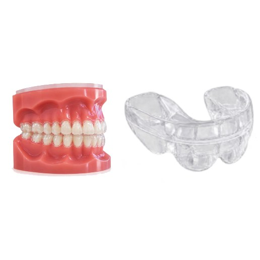
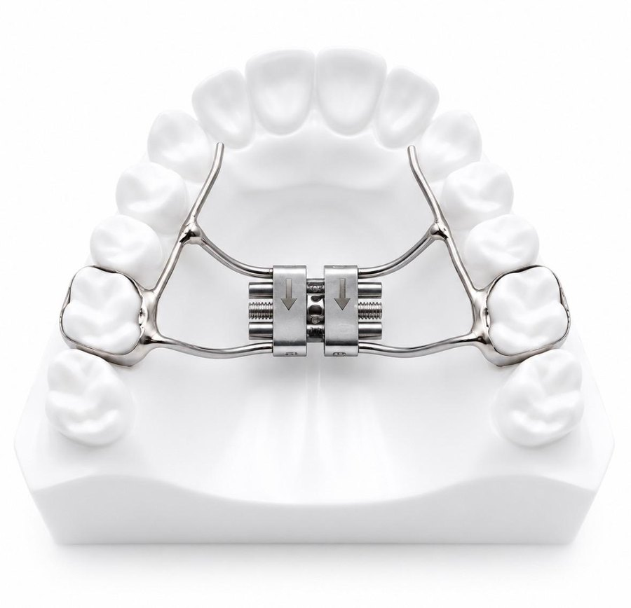
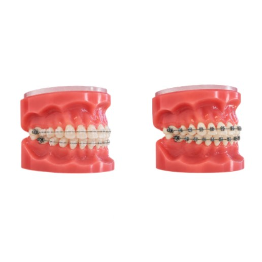
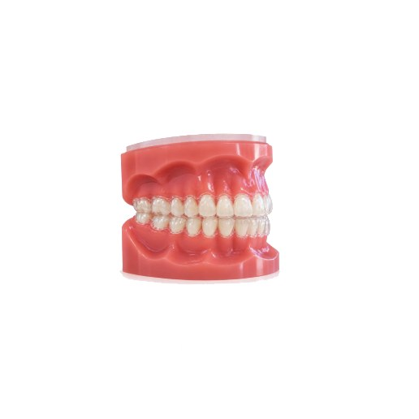
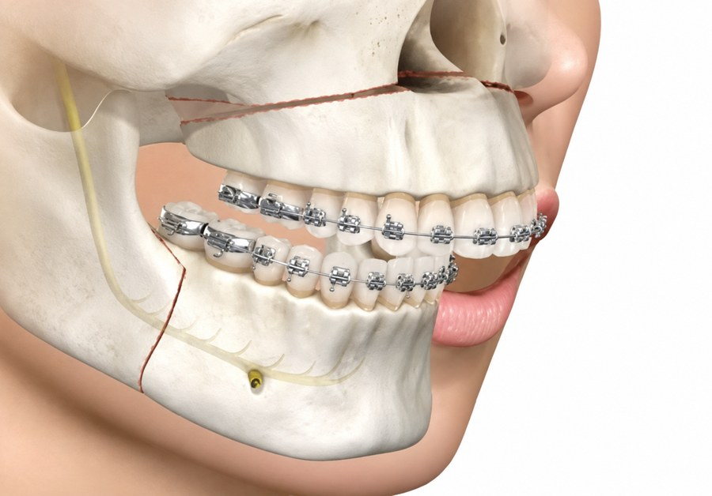

Votre parcours
Traitements & appareils
Les étapes de votre suivi ainsi que les différents types d'appareils proposés selon les besoins et les objectifs de chaque patient.
Prise en charge
Votre parcours de soins en 5 étapes
Première consultation
- Création du dossier patient
- Examen clinique
- Radiographies nécessaires au diagnostic
- Remise d'un devis personnalisé
- Explications des démarches administratives
Bilan orthodontique
- Empreintes numériques
- Photographies orthodontiques
- Analyses céphalométriques
- Élaboration d'un diagnostic complet
- Présentation d'un plan de traitement adapté au patient
Début de traitement
- Pose de l'appareil
- Conseils d'hygiène bucco-dentaire
- Recommandations d'hygiène alimentaire et d'entretien de l'appareil
Suivi du traitement actif
Contrôles réguliers pour suivre l'évolution du traitement, activer l'appareil et accompagner le patient. La coopération du patient, l'assiduité aux rendez-vous, le port des dispositifs prescrits et le respect des consignes d'hygiène bucco-dentaire sont essentiels au bon déroulement du traitement.
Dépose de l'appareil et contention
À l'issue du traitement actif, un suivi est nécessaire afin de préserver la stabilité du résultat.
Les appareils
Différents appareils selon les besoins de chaque patient
Différents types d'appareils sont proposés en fonction des besoins de chaque patient et des objectifs de traitement.

01 — Fonctions oro-faciales
Rééducation fonctionnelle
L'objectif est de rééduquer les fonctions oro-faciales que sont la ventilation, la déglutition, la mastication et la phonation, afin de permettre une évolution de la dentition dans un cadre anatomique normalisé. Ce type de traitement peut être réalisé en collaboration avec un orthophoniste ou un kinésithérapeute.

02 — Traitements orthopédiques
Traitements interceptifs et activateurs de croissance
Ce sont des traitements qui permettent une correction précoce afin de prévenir ou limiter une dysmorphie faciale et/ou occlusale. Ils facilitent et réduisent ainsi la durée de la deuxième phase de traitement par multi-attaches.

03 — Multi-attaches
Traitements par multi-attaches, ou « bagues »
Ils permettent l'alignement des dents mais aussi une mise en occlusion correcte des arcades dentaires. Ils sont souvent associés au port d'élastiques.

04 — Aligneurs
Traitements par aligneurs, ou « gouttières »
L'objectif est également l'alignement des dents et la concordance des arcades dentaires. Les aligneurs sont plus discrets et donc plus esthétiques. Ils autorisent des repas plus confortables et une hygiène améliorée par rapport aux bagues. Ils présentent l'inconvénient d'exiger une coopération rigoureuse du patient : ils doivent impérativement être portés 22 heures sur 24.

05 — Chirurgie orthognathique
Traitements chirurgico-orthodontiques
En collaboration avec un chirurgien maxillo-facial, ces traitements allient la chirurgie orthognathique à l'orthodontie. Ils sont nécessaires et envisagés chez les patients dont la malocclusion est sévère et dont le potentiel de croissance est limité ou ne peut plus être exploité.
Des questions ?